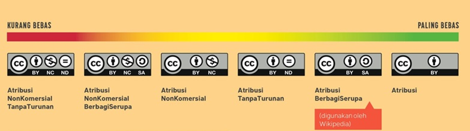

Lokakarya Hak Cipta dan Lisensi Creative Commons di Coffee Society, Bone
Pada tanggal 7 Oktober 2018, Creative Commons Indonesia (CCID) yang diwakili oleh Hilman Fathoni (Legal Lead CCID) berkesempatan menyampaikan materi tentang hak cipta dan lisensi Creative Commons (lisensi CC) bekerjasama dengan Komunitas Teluk Bone. Acara ini mulai pada pukul 07.45 WITA di Cofee Society di Watampone, Bone, Sulawesi Selatan. Lokakarya kali ini dihadiri oleh sekitar 50 peserta yang dari berbagai latar belakang di Bone. Untuk itu materi yang dibawakan merupakan gambaran umum tentang hak cipta dan lisensi CC.
Perlindungan Hak Cipta
Mekanisme Perlindungan
Mekanisme perlindungan KI berebeda dengan Hak Cipta, Hak Merek, dan Hak Paten berdasarkan obyek perlindungannya. Meskipun ketiga mekanisme perlindungan tersebut semuanya berada di bawah terminologi perlindungan kekayaan intelektual. Setiap mekanisme yang ada memiliki dasar hukum yang berbeda. Perlindungan hak cipta diatur melalui Undang-Undang No. 28 Tahun 2014 Tentang Hak Cipta (UUHC 2014).
Mekanisme perlindungan KI masing-masing dibedakan dari ruang lingkup atau obyek perlindungannya. Obyek perlindungan hak cipta diatur melalui Pasal 40 Undang-UUHC 2014 (lihat rujukan: 1., 2.). Ciptaan-ciptaan ini lah yang membedakan mekanisme perlindungan hak cipta dengan mekanisme perlindungan KI lainnya. Namun, pada dasarnya hubungan hukum dalam mekanisme perlindungan KI meliputi subyek hukum yang serupa, meskipun tidak sama.
Dalam mekanisme perlindungan hak cipta, yang termasuk subyek hukum yaitu Pencipta atau Pemegang Hak Cipta dan Pengguna Ciptaan. Pencipta adalah pihak yang menciptakan suatu ciptaan, yang kemudian secara langsung memiliki peran sebagai pemegang hak cipta. Pemegang hak cipta belum tentu seorang pencipta, bisa saja pihak pemegang hak cipta adalah seseorang atau suatu kelompok yang dengan izin pencipta memiliki wewenang: hak dan kewajiban yang sama dengan pencipta. Tujuan pemberian izin ini biasanya adalah untuk membantu pencipta dalam mengatur mekanisme perlindungan hak ciptanya. Pengguna ciptaan adalah pihak yang bermaksud menggunakan ciptaan milik seseorang atau suatu kelompok dengan maksud untuk memperoleh manfaat dari ciptaan tersebut.
Pada hakikatnya, seluruh obyek perlindungan hak cipta mewajibkan setiap pengguna ciptaan untuk memperoleh izin penggunaan (penggandaan, dan penyebarluasan) secara langsung dari pencipta atau pemegang hak cipta dalam aktivitas penggunaan ciptaan. Manfaat yang dimaksud pada akhir kalimat di paragraf sebelumnya ada dalam konsep perlindungan hak moral dan hak ekonomi. Hak moral melindungi hak pencipta atau pemegang hak cipta dengan mewajibkan pengguna ciptaan untuk menyebutkan nama pencipta atau pemegang hak cipta serta sumber ciptaan dengan baik. Selain itu hak moral juga mewajibkan agar setiap penggunaan ciptaan menggunakan ciptaan dengan baik, tanpa melecehkan pencipta atau pemegang hak cipta, atau menyelewengkan maksud penciptaan dari ciptaan tersebut. Arti dari penyelewengan adalah, misalnya, seorang anggota organisasi masyarakat (ormas) melakukan klaim atas suatu karya video sebagai bentuk dukungan terhadap gerakan ormasnya. Apabila pihak pencipta atau pemegang hak cipta tidak setuju dengan model penggunaan tersebut, dapat menggunakan mekanisme perlindungan hak moral untuk menghentikan distribusi karya video oleh ormas tersebut, atau bahkan meminta ganti rugi apabila permasalahan dibawa sebagai sengketa di ranah pengadilan niaga.
Hak ekonomi membantu pencipta atau pemegang hak cipta untuk menjaga manfaat komersial dari ciptaannya. Maksudnya supaya pemasukan atau royalti dari setiap penggunaan ciptaannya dalam aktivitas komersial dapat selalu tersalurkan kepada pihak pencipta atau pemegang hak cipta. Setiap pengguna ciptaan yang hendak menggunakan suatu ciptaan wajib memperoleh izin langsung terlebih dahulu dari pihak pencipta atau pemegang hak cipta. Namun, bisa saja dalam hal ini pencita atau pemegang hak cipta mengecualikan pengguna ciptaan dari beban royalti jika memang disepakati demikian dalam konteks penggunaan tertentu.
Fungsi Sosial Hak Cipta
Undang-Undang No. 28 Tahun 2014 Tentang Hak Cipta (UUHC 2014) beberapa elemen fungsi sosial. Elemen-elemen tersebut antara lain adalah:
Ciptaan-ciptaan yang tidak dilindungi (Pasal 42)
Dalam bagian ini, UUHC 2014 menjabarkan beberapa jenis ciptaan yang tidak dapat dilindungi oleh mekanisme perlindungan hak cipta di Indonesia. Arti dari pengecualian ciptaan-ciptaan ini dari mekanisme perlindungan hak cipta ialah seluruh pengguna ciptaan dapat menggunakan ciptaan-ciptaan tersebut, termasuk untuk kepentingan komersial, tanpa izin langsung dari pihak terkait (pencipta atau pemegang hak cipta). Namun, pengguna ciptaan wajib untuk tetap menyebutkan nama pencipta atau pemegang hak cipta dan/atau sumber ciptaan dalam setiap aktivitas penggunaan. Dan, setiap aktivitas penggunaan bukan merupakan aktivitas yang termasuk dalam kategori perbuatan melanggar hukum ataupun standar etika yang berlaku.
Hasil Rapat Terbuka Lembaga Negara (contoh 1)
Ciptaan yang dirujuk dalam poin ini adalah isi dari setiap rapat yang diselenggarakan oleh Lembaga Negara. Dalam hal ini setiap rapat yang terbuka untuk umum, bukan rapat tertutup yang membahas hal-hal yang bersifat rahasia negara. Jika hasil rapat terbuka dipublikasikan oleh media daring, seperti ini, maka yang dapat digunakan oleh pengguna ciptaan atau tidak dilindungi oleh mekanisme perlindungan hak cipta adalah isi hasil rapat yang dikutip sebagai berita oleh media tersebut. Keseluruhan artikel atau berita yang diumumkan oleh media tersebut hak ciptanya masih tetap dipegang oleh reporter dan/atau kantor berita tersebut sebagai badan hukum.
Peraturan Perundang-Undangan (contoh)
Setiap peraturan perundang-undangan yang diterbitkan oleh Pemerintah dapat langsung digunakan oleh publik secara bertanggung jawab.
Pidato Kenegaraan atau Pidato Pejabat Pemerintah (contoh 1, contoh 2)
Sama halnya dengan hasil rapat terbuka lembaga negara, yang dirujuk sebagai ciptaan yang langsung dapat digunakan oleh pengguna ciptaan ialah isi dari pidato-pidato tersebut. Jika sebuah media mengutip isi pidato tersebut, maka yang dapat pengguna ciptaan langsung gunakan adalah kutipan isi pidatonya, bukan keseluruhan artikel yang mengandung kutipan pidato tersebut.
Putusan Pengadilan atau Penetapan Hakim (contoh)
Setiap putusan pengadilan atau penetapan hakim yang dikeluarkan oleh lembaga yudikatif seperti Mahkamah Agung dapat langsung digunakan oleh pengguna ciptaan secara bertanggung jawab. Prinsip ini sama halnya dengan kebijakan keterbukaan informasi yang dilaksanakan dengan pembuatan portal-portal data terbuka.
Kitab Suci atau Simbol Keagamaan
Dalam hal ini Peraturan Perundang-Undangan belum memberikan penjelasan apakah Kitab suci atau simbol keagamaan yang dimaksud adalah yang diakui oleh Negara Republik Indonesia atau juga yang lainnya.
Penggunaan wajar (Pasal 43-51)
Pada prinsipnya konsep ini merupakan daftar pengecualian beberapa perbuatan yang tidak dianggap sebagai pelanggaran hak cipta. Perbuatan-perbuatan yang dikecualikan ini kemudian paling tidak dibagi lagi ke dalam 3 kategori:
Berdasarkan Lembaga
Dalam konsep pembatasan perlindungan hak cipta, lembaga yang bergerak di ranah pengarsipan diizinkan untuk menggandakan ciptaan tanpa izin langsung pencipta atau pemegang hak cipta sebanyak 1 kopi untuk disimpan dan digunakan jika ciptaan yang merupakan materi asli rusak atau hilang. Kemudian, apabila lembaga tersebut merupakan lembaga negara, Kepolisian misalnya, diizinkan untuk menggunakan ciptaan tanpa izin langsung pencipta atau pemegang hak cipta dalam aktivitas penyidikan yang mereka laksanakan. Setiap wewenang yang merupakan pekerjaan suatu lembaga negara dapat mengecualikan tiap pekerjanya sebagai pengguna ciptaan dari mekanisme perlindungan hak cipta.
Berdasarkan Tujuan
Dalam konsep pembatasan perlindungan hak cipta, setiap perbuatan penggandaan atau penyebarluasan ciptaan oleh pengguna ciptaan dalam aktivitas berbagi ciptaan yang dilakukan di ranah daring, apabila dilakukan tanpa izin langsung pencipta atau pemegang hak cipta, dikecualikan dari kategori pelanggaran hak cipta selama sumber atau nama pencipta atau pemegang hak cipta disebutkan dan bukan merupakan aktivitas komersial. Kemudian, penggandaan atau penyebarluasan konten berita aktual yang diterbitkan oleh suatu kantor berita dapat, apabila dilakukan tanpa izin langsung dari pihak penulis atau penerbit artikel, dapat dikecualikan dari kategori pelanggaran hak cipta jika sumber artikel yang digandakan atau disebarkan tetap disebut.
Berdasarkan Pengguna
Dalam konsep pembatasan perlindungan hak cipta, setiap penggunaan ciptaan yang dimaksudkan untuk membuka akses ciptaan tersebut terhadap penyandang tuna netra atau keterbatasan dalam membaca dikecualikan dari kategori pelanggaran hak cipta meskipun dilaksanakan tanpa izin langsung dari pihak pencipta atau pemegang hak cipta. Selain itu, penggandaan ciptaan sebanyak 1 kopi juga dapat dilakukan oleh pengguna ciptaan, di luar konteks penggunaan untuk penyandang tuna netra, dapat dilaksanakan tanpa izin langsung pencipta dan dikecualikan dari kategori pelanggaran hak cipta apabila dilaksanakan untuk kepentingan pribadi, bukan untuk diumumkan kembali.
Masa berlaku perlindungan hak cipta (Pasal 57-61)
Memahami masa berlaku perlindungan hak cipta harus merujuk pada pembagian ketentuan berdasarkan ciptaannya. Paling tidak kita dapat memahami hal tersebut dengan memisahkannya menjadi dua bagian:
Teks, rekaman suara, karya seni rupa, dan lain-lain (Pasal 58)
Masa berlaku perlindungan hak cipta untuk ciptaan-ciptaan yang disebutkan dalam Pasal 58 adalah seumur hidup pencipta ditambah 70 tahun, dan mulai masuk ke domain publik pada tanggal 1 januari satu tahun setelahnya. Apabila ciptaan diciptakan atau pemegang hak ciptanya dua orang atau lebih maka masa berlaku dihitung dari pencipta atau pemegang hak cipta yang meninggal paling akhir. Selain itu, apabila ciptaan terkait hak ciptanya dipegang oleh badan hukum, maka masa berlakunya adalah 50 tahun setelah ciptaan pertama kali diumumkan. Apabila penciptanya tidak diketahui (orphaned works) maka ciptaan tersebut hak ciptanya dipegang oleh negara, dan masa berlakunya habis 50 tahun setelah diumumkan.
Karya fotografi, karya sinematografi, program komputer dan lain-lain (Pasal 59)
Masa berlaku perlindungan hak cipta untuk semua ciptaan yang disebutkan dalam Pasal 59 adalah 50 tahun sejak pertama kali ciptaan diumumkan.
Ketentuan di atas ialah informasi penentuan masa berlaku perlindungan hak ekonomi. Ketentuan masa berlaku perlindungan hak moral memiliki mekanisme yang sedikit berbeda. Pada prinsipnya hak moral berlaku tanpa batas waktu. Namun, hak moral yang berfungsi untuk melindungi ciptaan seorang pencipta atau pemegang hak cipta dari aktivitas pengubahan dan/atau penggubahan ciptaan akan hilang mengikuti ketentuan masa berlaku perlindungan hak ekonomi.
Lisensi Hak Cipta
Menurut Angka 20 Ketentuan Umum UUHC 2014, lisensi hak cipta adalah sebuah izin tertulis yang berfungsi sebagai pemberitahuan oleh pencipta atau pemegang hak cipta kepada pengguna ciptaan mengenai pelaksanaan hak dan kewajiban dari aktivitas penggunaan suatu ciptaan. Intinya, izin tersebut menyatakan apa yang boleh dan tidak boleh dilakukan oleh pengguna ciptaan terhadap suatu ciptaan. Bentuk lisensi hak cipta dapat dipahami dengan membaginya ke dalam dua bentuk:
-
Lisensi ke dalam memiliki bentuk yang kurang lebih sama dengan perjanjian-perjanjian pada umumnya. Biasanya lisensi dengan bentuk ini aksesnya tidak terbuka. Lisensi ini hanya dapat diakses oleh pihak-pihak yang dengan terang disebutkan di dalam perjanjian lisensi sebagai pihak yang terikat dengan ketentuan lisensi. Karena sifatnya yang privat, lisensi dengan bentuk ini biasanya hanya mengikat beberapa pihak saja.
-
Lisensi ke luar dapat disebut sebagai lisensi publik. Akses untuk melihat ketentuan lisensi ini terbuka bagi pihak-pihak yang hendak mengikatkan diri dalam suatu hubungan hukum, dalam hal ini aktivitas penggunaan ciptaan. Lisensi dengan bentuk ini dapat mengikat banyak pihak sekaligus karena sifatnya yang terbuka. Pada intinya ketentuan lisensi ini mengikat pencipta atau pemegang hak cipta dengan semua pengguna ciptaan yang menggunakan ciptaan yang diumumkan dengan ketentuan lisensi ini.
Lisensi hak cipta dapat menjadi alat penyederhana bahasa hukum dari UUHC. Dengan begitu dialog antara pencipta atau pemegang hak cipta akan menjadi semakin mudah. Karena tidak semua pihak-pihak terkait dalam hubungan hukum di ranah perlindungan hak cipta memiliki pengetahuan atau dapat langsung memahami mekanisme perlindungan hak cipta dengan membaca peraturannya. Selain itu dengan mengetahui perbedaan jenis lisensi dan isi ketentuannya, pengguna ciptaan dapat membedakan mana ciptaan yang dapat diakses secara gratis saja dan mana ciptaan yang dapat diakses secara gratis dan terbuka. Maksud terbuka dalam hal ini adalah ciptaan-ciptaan tersebut selain dapat diunduh dan disebarluaskan secara gratis, juga mengandung izin langsung yang memungkinkan pengguna ciptaan untuk menggubah atau menggunakan ciptaan dalam kepentingan komersial.
Lisensi hak cipta juga dapat dibagi berdasarkan sifat ketentuannya, yaitu:
- Lisensi Tertutup biasanya dinyatakan dengan ungkapan “all rights reserved” (seluruh hak dipertahankan). Artinya, pihak pencipta atau pemegang hak cipta sepakat dengan mekanisme perlindungan hak cipta tradisional. Di mana seluruh pengguna ciptaan yang dapat mengakses ciptaannya harus mendapatkan izin langsung atau melakukan interaksi secara langsung dengan pencipta atau pemegang hak cipta untuk kemudian menggunakan ciptaan sesuai dengan kebutuhannya. Lisensi ini ada seketika setelah ciptaan diciptakan dan diumumkan.

- Lisensi Terbuka biasanya, meskipun tidak selalu, dinyatakan dengan ungkapan “some rights reserved” (beberapa hak dipertahankan). Sifat terbuka dari lisensi ini biasanya dinyatakan dengan ketentuan yang langsung mengizinkan penggandaan dan penyebarluasan ciptaan oleh pengguna ciptaan. Lisensi ini biasanya dilengkapi dengan ketentuan pilihan yang nantinya ditentukan oleh pencipta atau pemegang hak cipta untuk mengatur hak penggunaan ciptaan pengguna ciptaan. Jenis lisensi ini diterapkan oleh pencipta atau pemegang hak cipta yang ingin memberikan akses terbuka dan legal kepada pengguna ciptaan dalam aktivitas penggunaan ciptaannya. Penentuan ketentuan lisensi hak cipta oleh pihak pencipta atau pemegang hak cipta sesuai dengan bunyi Pasal 81 UUHC 2014. Sifat pembuatanya yang mandiri menyebabkan terciptanya produk lisensi terbuka yang beragam, seperti GNU General Public License, Open Governmet License, dan termasuk Lisensi Creative Commons.
Lisensi Creative Commons
Sebelum menerapkan lisensi CC, ada baiknya memahami beberapa pertimbangan yang harus diketahui pencipta atau pemegang hak cipta (pemberi lisensi) sebelum menerapkan lisensi tersebut pada ciptaanya, yaitu sebagai berikut: (Daftar ini merupakan hasil pembaruan yang merujuk ketentuan dari laman ini)
Ketentuan lisensi yang diterapkan tidak dapat dicabut (irrevocable);
Misalnya, ciptaan yang pertama kali diumumkan dengan izin penggunaan untuk kepentingan komersial kepada pengguna ciptaan dicabut ketentuan lisensinya dan diganti dengan ketentuan lisensi yang bertolak belakang dari ketentuan lisensi sebelumnya. Penerima lisensi dari ketentuan sebelumnya akan terikat dengan ketentuan lisensi yang baru dalam setiap penggunaan ciptaan setelah ketentuan tersebut berlaku. Ketentuan ini ada untuk menghindari terjadinya sengketa dengan asumsi bahwa ciptaan sudah digunakan dan disediakan di berbagai tempat yang berbeda oleh berbagai pengguna. Pengguna yang merujuk ketentuan lisensi pada saat ciptaan tersebut pertama kali diumumkan. Asumsi lain ialah informasi tentang berubahnya ketentuan lisensi belum tentu sampai ke semua pengguna ciptaan yang merujuk pada ketentuan lisensi sebelumnya.
Tentu saja risiko sengketa ini tidak berlaku pada perbuatan yang terjadi di masa lampau (sebelum ketentuan lisensi baru berlaku). Pembicaraan selesai karena dalam konteks hukum Indonesia (asas non-retroaktif) tidak memungkinkan adanya gugatan terhadap pelanggaran hukum sebelum sebuah peraturan atau suatu ketentuan berlaku. Maka dari itu, pengubahan ketentuan lisensi menghadirkan risiko nyata bagi pengguna ciptaan yang tidak menerima informasi mengenai pengubahan ketentuan lisensi dengan baik. Sengketa yang berakar dari kesalahpahaman sangat bisa terjadi apabila pencipta atau pemegang hak cipta menemukan penggunaan ciptaan yang menyalahi ketentuan lisensinya yang baru karena pengguna ciptaan tersebut masih merujuk ketentuan yang lama dari tempat ia mengakses ciptaan tersebut.
Hal ini menjadi alasan fundamental CC untuk tidak merekomendasikan pengubahan/pencabutan ketentuan lisensi CC yang sudah diterapkan. Meskipun bukan berarti pencipta atau pemegang hak cipta dilarang sama sekali untuk mengubah atau mencabut ketentuan lisensi yang sudah diterapkan dengan akibat hukum sebagaimana disebutkan di atas. Namun yang menjadi pertimbangan adalah ketika pemberi lisensi mengganti “isi perjanjian” yang mereka perjanjikan dengan penerima lisensi merupakan hal yang tidak etis. Kecuali, pemberi lisensi dapat menjamin atau mengurangi risiko sengketa dengan menarik ciptaan dari peredaran sama sekali atau mengumumkan pengubahan ketentuan lisensi tersebut seluas mungkin.
Pastikan ciptaan dapat dilisensikan dengan lisensi CC;
Lisensi CC hanya berlaku pada obyek perlindungan hak cipta saja (lihat pasal 40 UUHC 2014). Meskipun lisensi CC terinspirasi oleh lisensi seperti GNU General Public License, program komputer dikecualikan sebagai obyek penerapan lisensi CC. Karena ketentuan lisensi CC, baik lisensi ringkas maupun lisensi lengkap, tidak sesuai untuk diterapkan pada program komputer. Hal-hal mengenai ketentuan penggunaan serta perlindungan program komputer sebagai konten terbuka secara spesifik dapat ditemukan pada lisensi terbuka yang sebelumnya sudah populer diterapkan pada program komputer, contoh lain selain GNU adalah MIT License. Dalam lisensi-lisensi tersebut dipaparkan secara spesifik bagaimana pengguna program komputer sebagai penerima lisensi dapat menggunakan bagian-bagian (misalnya, kode sumber porgram komputer) program komputer.
Tandai ciptaan dengan ketentuan lisensi yang sesuai;
Seorang pencipta atau pemegang hak cipta dapat menerapkan ketentuan lisensi yang berbeda pada ciptaan yang berbeda pada satu tempat di mana pihak tersebut menyediakan ciptaan. Misalnya, pihak tersebut dapat menerapkan ketentuan lisensi A pada ciptaan teks A, kemudian lisensi B pada ciptaan karya fotografi A, dan ketentuan lisensi C pada ciptaan lain yang tersedia di tempat pihak tersebut menyediakan ciptaan-ciptaannya. Fungsi dari penandaan ini ialah untuk memberikan pemberitahuan ciptaan secara spesifik bahwa beberapa ciptaan di tempat tersebut dikecualikan dari satu ketentuan lisensi yang pada dasarnya diterapkan pada seluruh ciptaan di tempat tersebut. Selain itu, penandaan ini juga biasanya dilakukan sebagai penerapan atribusi ciptaan pihak lain yang menerapkan ketentuan lisensi yang berbeda.
Ciptaan yang dilisensikan harus merupakan ciptaan sendiri, atau diizinkan oleh pencipta atau pemegang hak cipta lain untuk melisensikan ciptaan dengan lisensi CC;
Seorang pengguna ciptaan di dalam jaringan bisa saja mengunggah suatu ciptaan yang bukan miliknya untuk diumumkan melalui suatu situs web. Jika pencipta atau pemegang hak cipta ciptaan tersebut belum menyatakan ketentuan penggunaan dengan suatu ketentuan lisensi, pengguna ciptaan tidak dapat menerapkan suatu ketentuan lisensi pada ciptaan yang diunggahnya. Untuk dapat melaksanakan hal tersebut, pengguna ciptaan harus memperoleh izin sekaligus pernyataan terlebih dahulu dari pencipta atau pemegang hak cipta seperti sistem OTRS di Wikimedia Commons berikut ini. Selain itu, seseorang dapat menerapkan ketentuan lisensi pada suatu ciptaan selama ciptaan tersebut merupakan ciptaannya.
Tentukan ketentuan penggunaan ciptaan yang hendak diterapkan;
Faktor ini merupakan hal yang mendasar sebelum suatu pihak menjadi pemberi lisensi CC. Calon pemberi lisensi harus memahami fungsi pemilihan ketentuan lisensi terlebih dahulu. Misalnya dengan membaca laman penjelasan 4 spektrum ketentuan atau hasil kombinasinya yaitu 6 pilihan lisensi CC. Dengan memahami hal ini, pemberi lisensi dapat menerapkan ketentuan lisensi CC yang sesuai dengan kemauannya pada ciptaannya.
Setiap ciptaan berlisensi CC dapat langsung digandakan dan disebarluaskan;
Hal ini sejalan dengan logika penyediaan ciptaan di dalam jaringan. Karena pada dasarnya setiap ciptaan yang dapat diakses secara terbuka di ranah daring dapat langsung digandakan dan disebarluaskan. Maka dari itu lisensi CC memberikan legitimasi secara tertulis sebagai landasan hukum pengguna ciptaan (penerima lisensi) pada aktivitas-aktivitas tersebut.
Penerapan Digital Rights Management dilarang untuk ciptaan berlisensi CC;
Sebagaimana disebutkan dalam poin sebelumnya, lisensi CC memungkinkan pengguna ciptaan untuk memperoleh izin langsung untuk menggandakan dan menyebarluaskan ciptaan. Digital Rights Management (DRM) atau sarana kontrol teknologi adalah teknologi perlindungan ciptaan yang dapat menghambat pengguna ciptaan untuk menggunakan ciptaan, misalnya dalam hal penggandaan dan penyebarluasan ciptaan. Misalnya, pencipta atau pemegang hak cipta menutup akses untuk pengunduhan ciptaan yang diunggah di dalam jaringan. Maka dari itu, model perlindungan ini tidak relevan untuk diterapkan pada ciptaan berlisensi CC.
Lisensi CC terdiri atas 4 spektrum pilihan yang dapat dikombinasikan menjadi 6 pilihan lisensi. Selain itu, terdapat 2 penanda ciptaan lain dari CC yaitu CC0 Dedikasi Domain Publik dan Tanda Domain Publik Creative Commons.
Dengan tersedianya pilihan ketentuan, maka pencipta atau pemegang hak cipta dapat memilih ketentuan lisensi yang paling sesuai dengan maksud penyediaan ciptaannya. Hal semacam ini diperlukan karena rasio atau spektrum dipilih dan diterapkan sesuai dengan motif penciptaan ciptaan dari masing-masing pencipta atau pemegang hak cipta. Misalnya, ia ingin memberikan izin kepada pengguna ciptaan untuk menggubah dan memanfaatkan ciptaan dalam kepentingan komersial, maka ia dapat memilih ketentuan lisensi yang paling bebas. Di sisi lain pengguna ciptaan juga dapat memilih ciptaan berdasarkan ketentuan lisensi yang diterapkan sesuai dengan kebutuhan penggunaannya.
Berikut isi dari ketentuan-ketentuan lisensi dan penanda ciptaan tersebut.
4 spektrum utama lisensi CC:
1. Spektrum Atribusi (BY)
Isi ketentuan:
- Kewajiban untuk menyebutkan nama pencipta atau pemegang hak cipta dan sumber ciptaan.
- Menyatakan perubahan yang dilakukan terhadap ciptaan.
Fungsi:
- Supaya pencipta atau pemegang hak cipta dapat terus disebutkan namanya sebagai sumber rujukan dalam setiap penggunaan.
- Untuk mengingatkan pengguna agar terus menyebutkan sumber ciptaan yang digunakan dengan sesuai.
- Untuk mengingatkan pengguna agar menyatakan perubahan yang dilakukan terhadap ciptaan.
Kombinasi Spektrum:
2. Spektrum BerbagiSerupa (SA)
Isi ketentuan:
- Kewajiban untuk menerapkan lisensi yang sama pada setiap hasil gubahan dan karya turunan
Fungsi:
- Tujuan penciptaan dan penyediaan ciptaan memang ditujukan sebagai ciptaan layak gubah.
- Untuk mempertahankan maksud penerapan lisensi pada materi asli oleh pencipta.
Kombinasi Spektrum:


- Lisensi CC BY-SA (Atribusi-BerbagiSerupa) dan Lisensi CC BY-NC-SA (Atribusi-NonKomersial-BerbagiSerupa)
3. Spektrum NonKomersial (NC)
Isi ketentuan:
- Larangan penggunaan ciptaan untuk kepentingan komersial.
- Kegiatan nirlaba dikecualikan dari ketentuan ini.
Fungsi:
- Mempertahankan jalur masuknya royalti secara eksklusif ke pencipta atau pemegang hak cipta.
- Ketentuan SA yang dikombinasikan dengan NC, memastikan bahwa setiap hasil gubahan menerapkan ketentuan NonKomersial, supaya ciptaan tidak dapat dikomersialisasi tanpa izin pencipta atau pemegang hak cipta.
Kombinasi Spektrum:


- Lisensi CC BY-NC (Atribusi-NonKomersial), Lisensi CC BY-NC-SA (Atribusi-NonKomersial-BerbagiSerupa), dan Lisensi CC BY-NC-ND (Atribusi-NonKomersial-TanpaTurunan)
4. Spektrum TanpaTurunan (ND)
Isi ketentuan:
- Larangan untuk mengubah dan menggubah ciptaan.
- Penggunaan pribadi dikecualikan (pengubahan atau penggubahan yang tidak diumumkan).
Fungsi:
- Menghindari manipulasi atau pemanfaatan ciptaan secara tidak bertanggung jawab.
- Menghindari pelanggaran kehormatan terhadap pencipta atau pemegang hak cipta dari aktivitas pengguna ciptaan.
Kombinasi Spektrum:

- Lisensi CC BY-ND (Atribusi-TanpaTurunan) dan Lisensi CC BY-NC-ND (Atribusi-NonKomersial-TanpaTurunan).
-
Lisensi CC BY-ND (Atribusi-TanpaTurunan) dan Lisensi CC BY-NC-ND (Atribusi-NonKomersial-TanpaTurunan).
-
Contoh penerapan:
- Situs web Katadata (CC BY-ND)